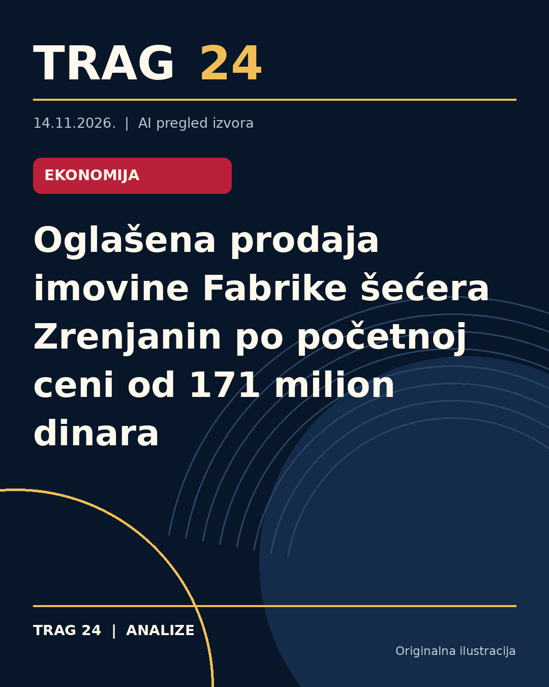

Oglašena prodaja imovine Fabrike šećera Zrenjanin po početnoj ceni od 171 milion dinara

ŠTA SE DOGODILO
Imovina Fabrike šećera „Zrenjanin“ stavljena je na prodaju po početnoj ceni od oko 171 milion dinara. Javno nadmetanje za ovu imovinu zakazano je za 15. decembar i održaće se u Agenciji za licenciranje stečajnih dužnika u Beogradu.
HRONOLOGIJA
Odluka o prodaji doneta je na osnovu zaključka stečajnog sudije u Zrenjaninu iz septembra 2009. godine, a potvrđena je odlukom odbora poverilaca održanim 8. oktobra ove godine. Nakon dužeg perioda stečajnog postupka, oglašavanje prodaje predstavlja nastavak procesa raspolaganja imovinom stečajnog dužnika.
ŠTA NAVODE IZVORI
Sva tri izvora - Nova.rs, N1 i Danas - prenose jedinstvenu informaciju o prodaji imovine po istoj početnoj ceni i datumu javnog nadmetanja. U izveštajima je istaknuto da imovina uključuje nepokretnu imovinu kao što su pomoćne zgrade, magacini, zgrade prehrambene industrije i proizvodnje pića, stambene zgrade i stanovi u Zrenjaninu, kao i poljoprivredno zemljište u katastarskim opštinama Žitište i Banatski Despotovac. Takođe, pominju se prava korišćenja zemljišta, pokretna imovina – oprema, kao i akcije u Univerzal banci Beograd.
ŠTA JE POTVRĐENO
Potvrđeno je da će prodaja biti sprovedena putem javnog nadmetanja 15. decembra u Beogradu. Cena za koju je oglašena imovina je oko 171 milion dinara. Sve navedene vrste imovine, uključujući nepokretnu i pokretnu, kao i potraživanja i akcije, obuhvaćene su u oglasu o prodaji. Odluke i postupci koji su doveli do oglašavanja prodaje potvrđeni su zvanično od strane stečajnog sudije i odbora poverilaca.
ŠTA NIJE POTVRĐENO
Nisu dostupni detalji o statusu potencijalnih kupaca, daljem toku prodaje posle nadmetanja, niti o eventualnim ponudama koje bi mogle biti predložene. Takođe, ne postoji informacija o razlozima zbog kojih je stečaj pokrenut pre više od decenije niti o ukupnim dugovanjima ili finansijskom stanju Fabrike šećera „Zrenjanin“.
ŠTA OSTАJE OTVORENO: Ostaje nejasno kako će prodaja uticati na budućnost fabrike i da li postoji plan za njen eventualni nastavak rada nakon prodaje imovine. Takođe, nije poznato da li će predmetna imovina biti podeljena ili kupljena od strane jednog ili više kupaca, kao i šta će biti sa zaposlenima i eventualnim obavezama stečajnog dužnika.
Izvori
- https://nova.rs/vesti/biznis/oglasena-prodaja-imovine-fabrike-secera-zrenjanin-po-pocetnoj-ceni-od-171-milion-dinara/
- https://n1info.rs/vesti/oglasena-prodaja-imovine-fabrike-secera-zrenjanin-po-pocetnoj-ceni-od-171-milion-dinara/
- https://www.danas.rs/vesti/ekonomija/oglasena-prodaja-imovine-fabrike-secera-zrenjanin-po-pocetnoj-ceni-od-171-milion-dinara/
Ova analiza je pripremljena uz pomoć veštačke inteligencije na osnovu javno dostupnih izvora. Navodi izvora nisu nužno nezavisno potvrđeni.